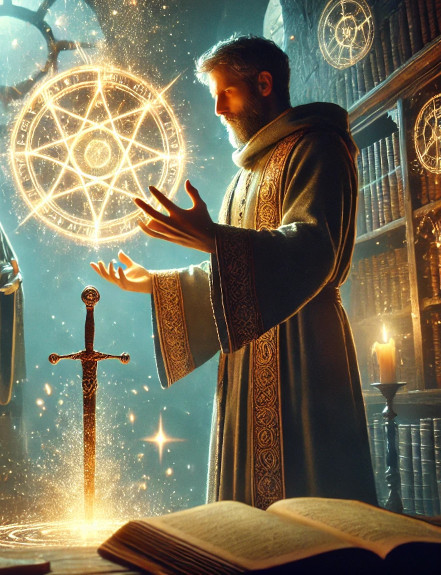
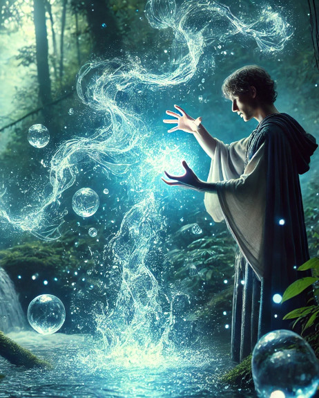
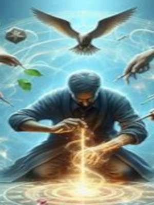
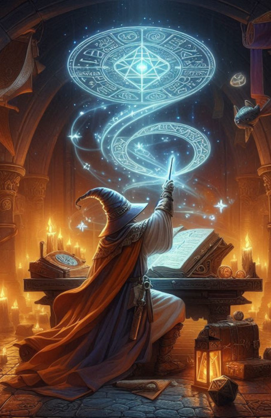

-
Cosertar
-
Transmutação
Componentes: V, G
Tempo de Execução: 1 ação padrão
Alcance: 3 metros
Alvos: Um objeto de até 500 g
Duração: Instantânea
Teste de Resistência: Vontade anula (inofensiva, objeto)
Resistência à Magia: Sim (inofensiva, objeto)
Consertar repara pequenas rachaduras ou rasgos em objetos (mas não distorções, como as causadas pela magia torcer madeira). A magia funde objetos metálicos quebrados como anéis, um elo de corrente, um medalhão ou o fio de uma adaga, considerando que estejam parcialmente quebrados. Os objetos de madeira e cerâmica com diversas rachaduras podem ser colados como se fossem novos. Um buraco em uma bolsa ou em um cantil de couro é completamente consertado. A magia é capaz de reparar um item mágico, mas as habilidades mágicas do item não serão restauradas. Para restaurar as habilidades de um item mágico danificado, consulte os talentos de criação de itens no Capítulo 5: Talentos. A magia não consegue consertar bastões, cajados e varinhasFaz pequenos reparos em um objeto. -
Criar Águas
-
Conjuração (Criação) [Água]
Componentes: V, G
Tempo de Execução: 1 ação padrão
Alcance: Curto (7,5 m + 1,5 m/2 níveis)
Efeito: Até 8 litros de água/nível
Duração: Instantânea
Teste de Resistência: Nenhum
Resistência a Magia: Não
Esta magia cria água pura e potável como a água de chuva. A água pode ser criada em uma área tão pequena quanto o necessário para o líquido ou em uma área três vezes maior (criando goteiras e enchendo vários recipientes pequenos). Observação: As magias de conjuração não podem criar substâncias ou objetos dentro de uma criatura. Um m³ de água pesa cerca de 1 tonelada.Cria 8 litros/nível de água pura. -
Curar Ferimentos Mínimos
-
Conjuração (Cura)
Como curar ferimentos leves, mas curar ferimentos mínimos só recupera 1 ponto de vida. Curar Ferimentos ModeradosCura 1 ponto de dano. -
Detectar Magia
-
Universal
Componentes: V, G
Tempo de Execução: 1 ação padrão
Alcance: 18 m
Área: Emanação em cone
Duração: Concentração, até 1 min./nível (D)
Teste de Resistência: Nenhum
Resistência à Magia: Não
O personagem detecta auras mágicas. A quantidade de informação obtida depende do tempo gasto para analisar uma área ou objeto específico: 1ª rodada: Presença ou ausência de auras mágicas. 2ª rodada: Quantidade de auras mágicas diferentes e a intensidade da aura mais poderosa. 3ª rodada: A intensidade e a localização de cada aura. Se os itens ou criaturas estiverem na linha de visão do conjurador, é possível realizar um teste de Identificar Magia para determinar a escola de magia envolvida em cada uma. Realize um teste por aura (CD 15 + nível da magia ou 15 + metade do nível de conjurador para um efeito que não seja uma magia). As áreas mágicas, assim como diversos tipos de magias ou fortes emanações mágicas, podem confundir ou esconder as auras mais fracas. Intensidade da Aura: O poder mágico e a intensidade de uma aura dependem do nível de conjurador da magia ou do item que está sendo analisado. Se uma aura se enquadra em mais de uma categoria de intensidade, a magia indica a mais forte. Tempo de Existência da Aura: Quanto tempo uma aura permanece ativa depende de sua intensidade original (para as magias) ou de quando foi destruída (para criaturas ou itens mágicos). Se esta magia for direcionada sobre estes locais, ela indicará uma intensidade de aura “fraca” (a mais suave); o quanto esta aura perdura depende de sua intensidade original: Intensidade Original Duração
Fraca 1d6 rodadas
Moderada 1d6 minutos
Poderosa 1d6x10 minutos
Avassalador 1d6 dias
As criaturas planares e elementais não são mágicos e esta magia não permite que eles sejam detectados, a menos que eles tenham sido invocados através de magia. A cada rodada, é possível analisar uma nova área. A magia atravessa barreiras com até 30 cm de pedra, 2,5 cm de metal comum, uma folha fina de chumbo ou 90 cm de madeira ou terra. Detectar magia pode se tornar permanente através da magia permanência.Detecta magias e itens mágicos a menos de 18 m. -
Archmage Stellarion, o Guardião das Estrelas

Um mago enigmático que manipula as forças do cosmos para proteger o equilíbrio universal. Archmage Stellarion utiliza seu Cetro Cósmico para canalizar feitiços de luz estelar, podendo banir inimigos para dimensões distantes ou fortalecer aliados com energia astral. Sua presença no campo de batalha é envolta em mistério e poder, sendo reverenciado como o "Sábio do Infinito".
ATK/ 2400 DEF/ 2600 -
Aegis Knight, o Guardião do Firmamento

Vestindo uma armadura forjada com fragmentos de estrelas, Aegis Knight é o defensor final das dimensões. Empunhando a Espada Astral e o Escudo Celestial, ele possui o poder de anular ataques inimigos e contra-atacar com golpes de pura energia cósmica. Seu juramento é proteger o equilíbrio entre luz e trevas, sendo lembrado como a "Fortaleza do Cosmos".
ATK/ 3000 DEF/ 2800 -
Stormbringer Dragon, o Arauto das Tempestades

Este poderoso dragão domina os céus, invocando trovões e relâmpagos com o bater de suas asas. Stormbringer Dragon é a personificação da fúria da natureza, destruindo tudo em seu caminho com rajadas elétricas e ventos cortantes. Diz-se que sua aparição é o prelúdio de uma tempestade sem fim, trazendo destruição e renovação aos campos de batalha.
ATK/ 2900 DEF/ 2100